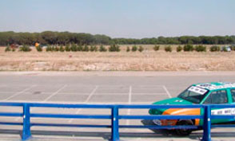

Bridges & Civil Structures
Research & Development

Self-compacting concrete
Research has been carried out to find the best SCC by modifying the concrete mixes and the quantity of additive. This new technology was thought only suitable in precast segmental bridges but it is also applicable in any case where a fluid consistency is required.
High Performance Concrete of 75 MPa
Developed in 2001 as part of the design of the Tilos Arch Bridge to reduce the weight of the structure during the cantilever construction.
Ferropre
Development of a metal retaining barrier for use as a parapet in bridges and viaducts (2006).
Compospan
A research project to explore the application to bridge engineering of new materials (Fibre Reinforced Polymers).
Invertha
A project to develop a new technology for self-compacting expansive concrete.